Project 2 Submissions
Images on this site will automatically advance through each of the student submissions.
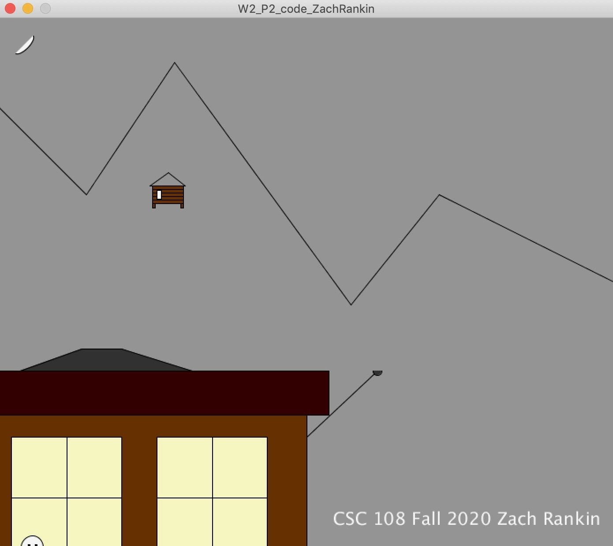
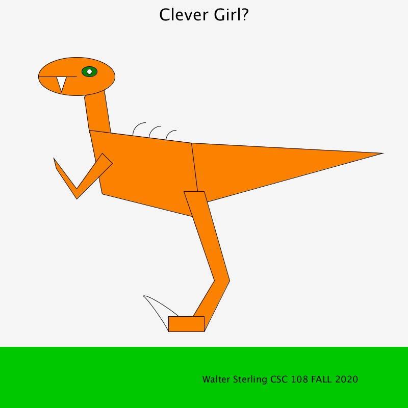
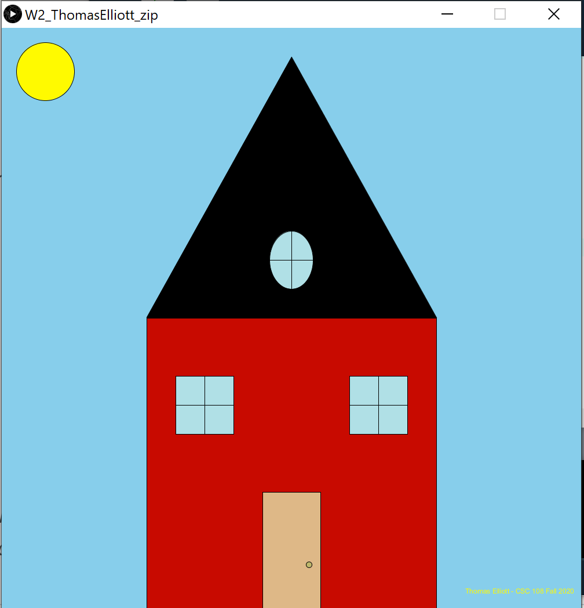
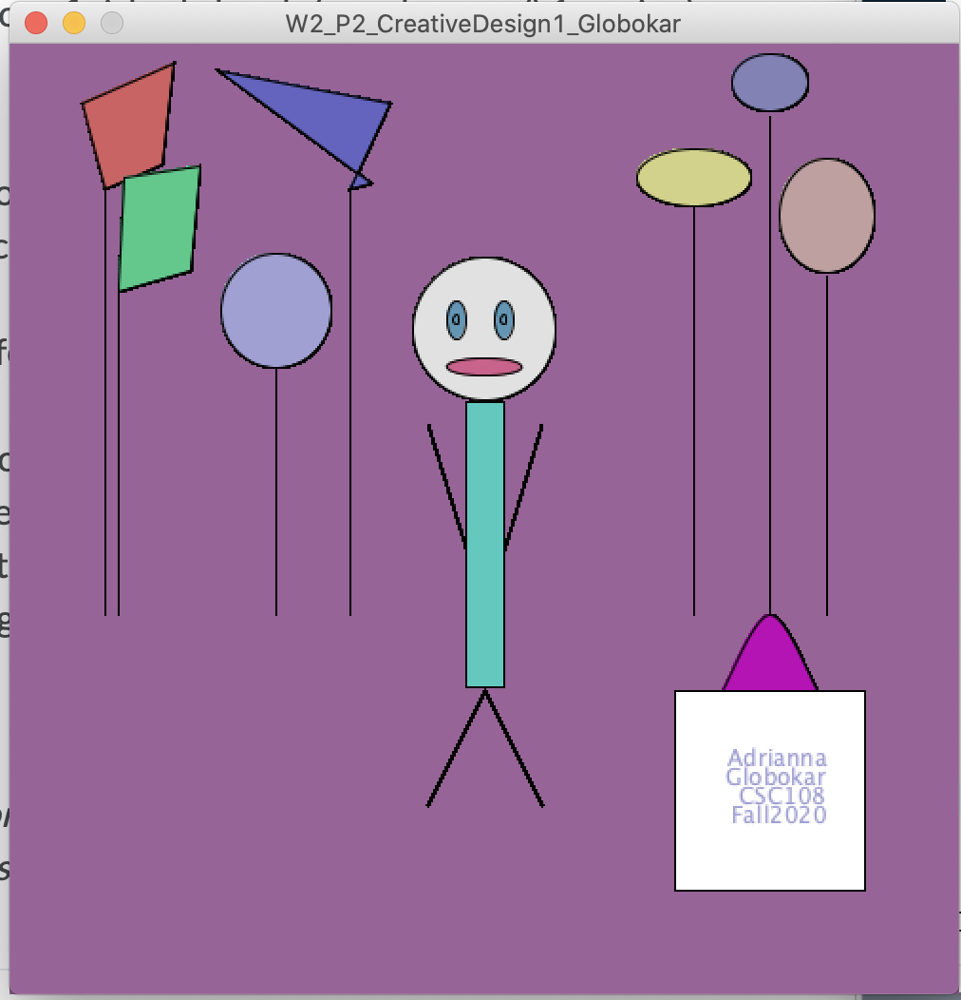
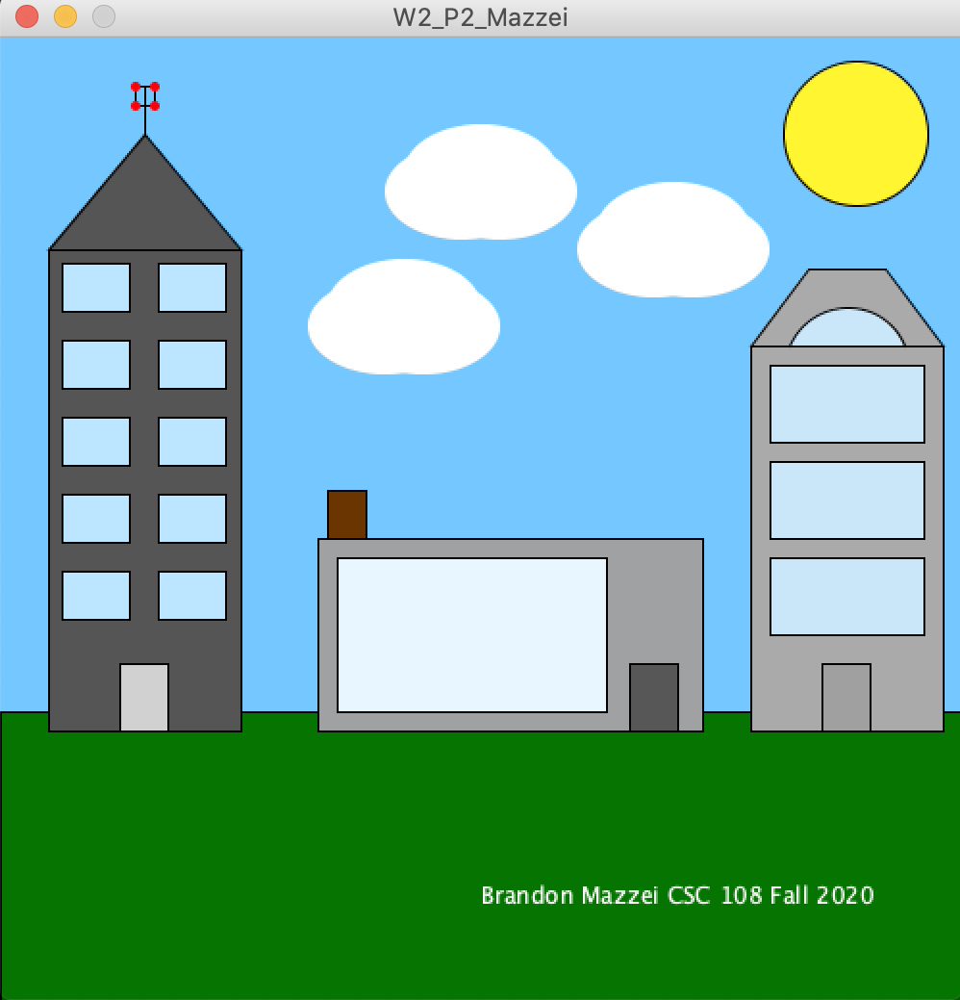
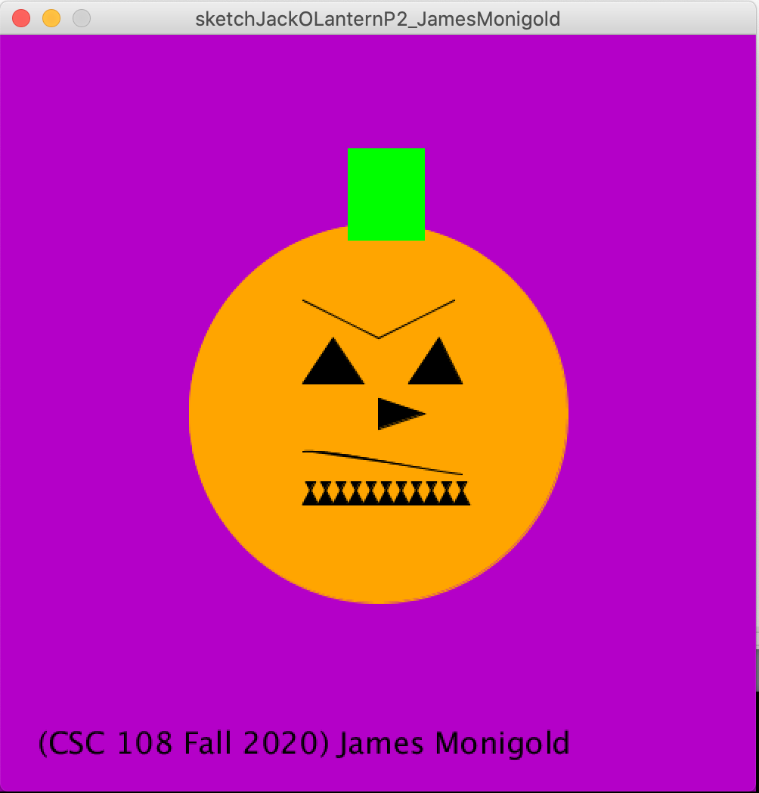
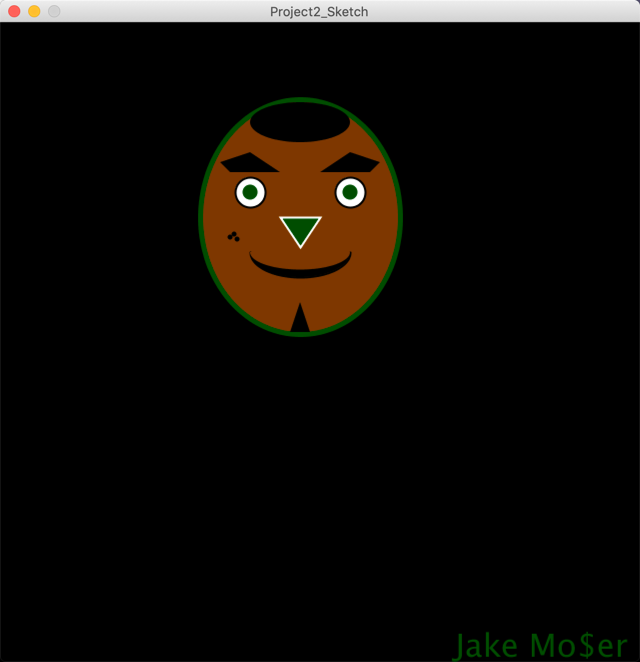
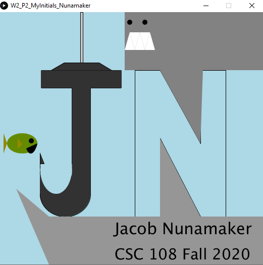
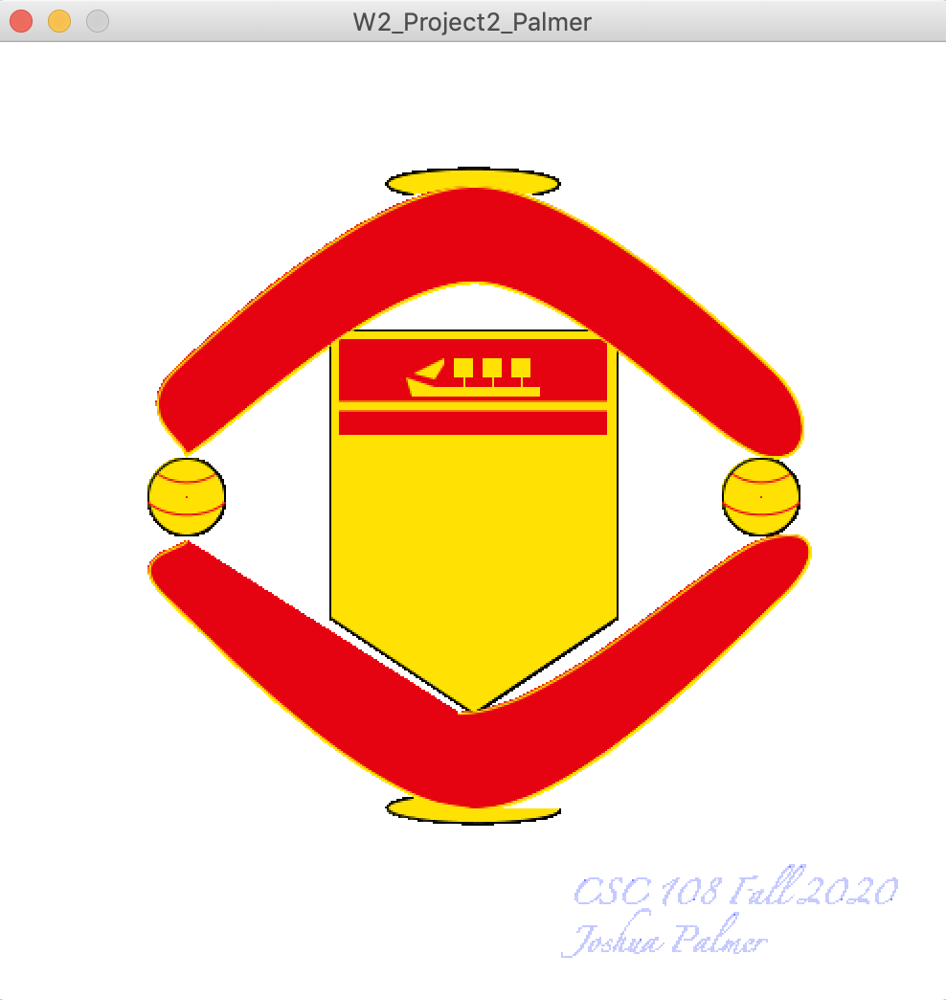
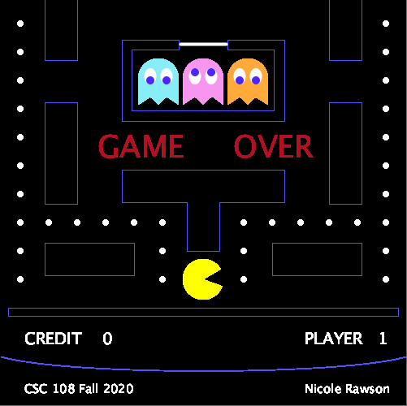
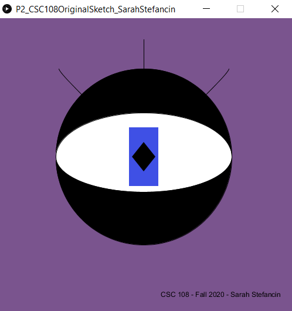
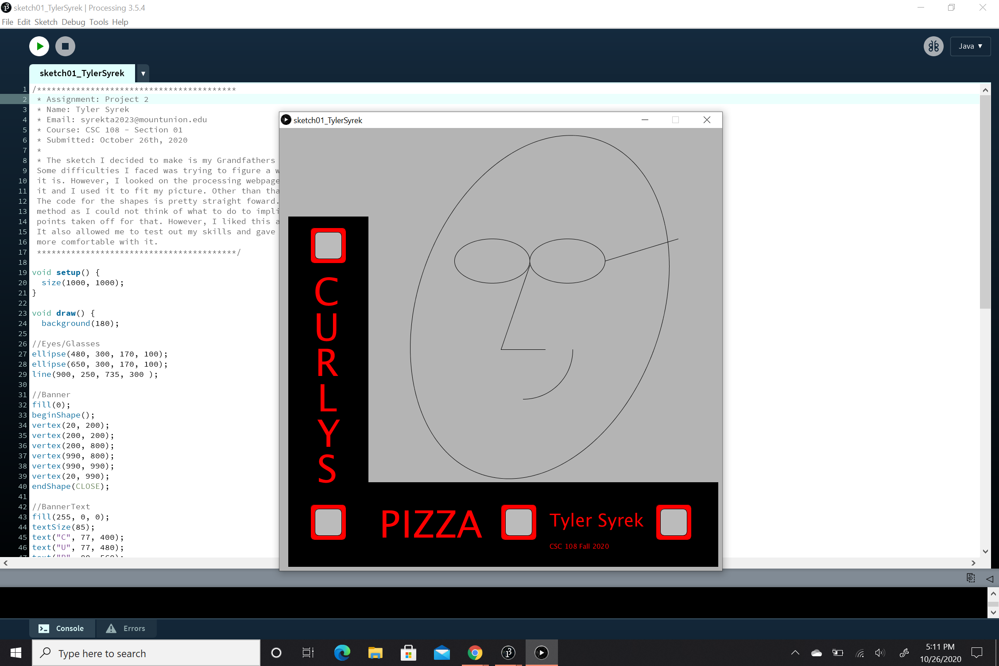
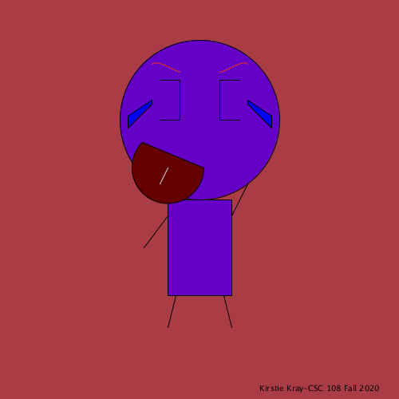
Images on this site will automatically advance through each of the student submissions.